Edició i creació d'imatges amb GIMP.¶
Des de fa ja uns anys hauràs pogut comprovar l'auge de les càmeres fotogràfiques digitals, en detriment de les antigues càmeres amb rodet.
Així com aquestes càmeres han anat millorant i fent-se més populars, han anat sorgint en el mercat del programari informàtic programes que permeten la descàrrega d'aquestes fotografies a l'ordinador, així com la seva edició, també permeten la creació de noves imatges a partir d'un llenç en blanc.
Un d'aquests programes és el GIMP (GNU Image Manipulation Program), és un programa de codi obert i gratuït, amb ell podem editar les imatges obtingudes amb les nostres càmeres, així com fer composicions i crear les nostres pròpies imatges.
La seva capacitat per a l'edició d'imatges arriba als nivells d'altres programes propietaris i de pagament.
1. La imatge digital. Característiques.¶
Ja saps que els ordinadors treballen amb informació digital i amb informació numèrica. En un ordinador la informació analògica de textos, imatges i sons es codifica per mitjà de bits.
Una imatge digital és una representació bidimensional d'una imatge analògica utilitzant bits (uns i zeros).
A l'hora d'editar imatges digitals et trobaràs, que hi ha dues grans categories on es pot englobar. Si la resolució de la imatge és estàtica es diu que el gràfic és rasteritzat o de mapa de bits, no obstant això, si la resolució de la imatge és dinàmica es diu que és un gràfic vectorial.
Les imatges vectorials es formen a partir de vectors. Les imatges es construeixen a partir de rectes, angles, corbes, definits amb punts que creen línies farcides. Aquests vectors es creen mitjançant fórmules i relacions matemàtiques com les de Bézier, usades per crear corbes. Un arxiu vectorial no pot definir una imatge de tonalitat continu, però sí que pot definir línies i dibuixos.
Les imatges de mapa de bits defineixen la imatge indicant la tonalitat dels píxels de la imatge. De la resolució de la imatge, dependrà el que ocupi finalment l'arxiu. Prestarem atenció a la profunditat de color que pot guardar.
Les imatges que més utilitzaràs en la vida real són les de mapa de bits, per això, durant aquest capítol ens centrarem en elles, i en la seva manipulació.
+ informació
Com ja hem dit ens centrarem en aquesta unitat en el programari per a l'edició d'imatges digitals de mapa de bits, ja que són les més utilitzades. Per saber més sobre un altre tipus de programari per a l'edició d'imatges vectorials, pots consultar aquest enllaç, en el qual trobaràs la pàgina web d'Inkscape, que és un programari per a l'edició d'imatges vectorials.
GIMP
GIMP és el Programa de Manipulació d'Imatges GNU. És programari lliure, i la seva distribució és gratuïta. S'utilitza tant per a tasques de retoc fotogràfic, com de composició d'imatges i creació d'imatge. Funciona en molts sistemes operatius i està traduït a una gran varietat d'idiomes.
1.1. Imatges escalars i vectorials.¶
Hi ha dues formes de representar una imatge, la vectorial i la de mapa de bits.
La imatge vectorial es compon d'objectes, que solen ser línies, rectangles, arcs i corbes (les corbes de Bezier són les més típiques), formes obertes i tancades, i textos.
Cada objecte té unes característiques com són: amplada de línia, color, patró i rebliment. A més, cada objecte és independent de la resta d'objectes, per la qual cosa poden ser manipulats independentment.
Si diversos objectes se superposen, hi ha un eix de profunditat que fa que no es vegin les parts ocultes dels objectes més al fons de la imatge. És possible graduar la transparència dels objectes més propers.
La imatge vectorial es pot escalar sense cap problema.
+ informació
Aquests gràfics vectorials s'utilitzen quan es vol utilitzar una imatge tant en un llenç molt petit, com en un altre gegantí, per poder ampliar la imatge sense patir l'efecte d'escalat que pateixen l'altre tipus d'imatges. Consultar la definició, les aplicacions i els formats dels gràfics vectorials. Gràfics vectorials.
La imatge rasteritzada o de mapa de bits és un patró de punts de color molt petits. És el que prenen les càmeres fotogràfiques per crear-les partint del món real.
És molt difícil convertir una imatge rasteritzada a una vectorial, mentre que una vectorial pot convertir-se automàticament a un de mapa de bits. Quan intentis augmentar la mida d'una de les fotografies que has realitzat amb la teva càmera digital, veuràs que la imatge perd qualitat.
Alguna vegada, necessitaràs fer que dues imatges, una de mapa de bits, i una altra vectorial, es fonamenten en una de sola. Això et serà possible gràcies al seu torn que permeten la unió d'aquests dos tipus d'imatges, a través de capes unes amb mapa de bits, i altres amb imatges vectorials. O bé, a través de la inclusió del mapa de bits com un objecte addicional dins d'una imatge vectorial.
Existeixen tres tipus diferents de programari per a l'edició d'imatges: el primer tipus és el programari per al dibuix, és a dir, per a la creació de mapes de bits des de zero. El segon tipus és el programari per al retoc d'imatges, és a dir, per a la modificació de mapes de bits. Finalment, el programari per crear i editar dibuixos vectorials.
Autoavaluació
Test d'autoavaluació
1. Quin dels següents programes és l'adequat per a l'edició d'imatges vectorials?
1.2. El color.¶
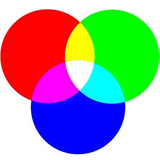
Si ens endinsam en el món de les imatges de mapa de bits, una de les coses més importants que has de conèixer és el concepte del color.
Qualsevol color es pot crear combinant els tres colors primaris, que són el vermell, groc i blau. Malgrat això, i per diversos motius el groc es substitueix pel color verd.amb llum això canvia, i el verd reemplaça el groc. Això donarà lloc al terme terme RGB: xarxa (vermell), green (verd), blue (blau).
Perquè el verd i no el groc?
La tria dels colors verd, vermell i blau (RGB) en lloc d'incloure el groc està directament relacionada amb:
1. Origen Tècnic: Model de Color RGB¶
Els sistemes digitals (pantalles, píxels) es basen en el model RGB (Red, Green, Blue), els colors primaris additius que, combinats, poden reproduir la majoria de colors visibles:
- Vermell (R) + Verd (G) = Groc (en teoria, però en la pràctica digital no és un groc pur).
- El groc no és un component primari en aquest model, sinó un color secundari.
2. Raons Pràctiques¶
- Contrast i llegibilitat:
El verd (#00FF00 en RGB pur) ofereix millor contrast sobre fons blanc que el groc (#FFFF00), que pot semblar "brillant" i fatigar la vista.
/* Groc pur (poc llegible) */
background-color: #FFFF00; /* Groc */
color: #000; /* Text negre */
/* Verd (més suau i llegible) */
background-color: #D4EDDA; /* Verd clar */
color: #155724; /* Verd fosc */
3. Problemes del Groc en Interfícies¶
- Accessibilitat:
El groc és el color menys accessible per a usuaris amb daltonisme (especialment en combinació amb blanc). - Impacte visual:
En pantalles, el groc pur (#FFFF00) vibra excessivament i pot causar fatiga visual.
4. Per què RGB i no RGY (vermell, verd, groc)?¶
- El groc no és un color primari en sistemes digitals:
En pantalles, el groc es sintetitza combinant vermell i verd a màxima intensitat, però no és un component bàsic com el blau. - El blau completa la gamma cromàtica:
Permet crear colors com el magenta, cian o blanc quan es combina amb vermell i verd.
En combinar-se els tres colors en la màxima proporció crearem el color blanc. Es denominen additius.
+ informació
El píxel és una unitat d'informació i no de mesura, s'hi emmagatzema informació de la imatge, com per exemple el color.
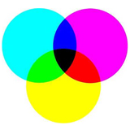
Per altra banda tenim els colors secundaris, que són groc, cyan i magenta (blanc menys blau, blanc menys vermell i blanc menys verd).
Amb ells com a base també podràs formar qualsevol color. Et sona aquest esquema de colors de les impressores, el CMYK ( Cyan (Cian) + Magenta (Magenta) + Yellow (Groc) + blacK (Negre)).
En combinar-se C, M, Y s'absorbeixen tots els colors i es genera negre. Per això, se'ls anomena colors substractius.
El negre pur (K) es fa servir a causa que les impureses de les tintes d'impressió produirien un marró, més aviat que un negre.
Una altra forma usual de fixar un color és usar tres de les seves propietats; la tonalitat, la saturació i la brillantor, HSB, Hue (tonalitat), Saturation (saturació) y Brightness (brillantor).
La tonalitat serà mesurada com una posició en graus, en la roda de colors estàndard. La saturació ens indica la puresa que té un color, seguint una línia entre el pur (100) i gris amb idèntica brillantor (0). La brillantor indica la lluminositat del color i marcaria la línia entre blanc (100) i negre (0).
En informàtica hi ha altres modes de color per a efectes, en part, obligats pel mode gràfic en el qual estem treballant. Per exemple:
- Monocrom, per a píxels només blanc o negre.
- Escala de grisos, per a imatges en blanc i negre però usant grisos en una escala que va del 0 (blanc) al 100 (negre), amb un nombre de bits determinat (per exemple 8 per a 256 tons diferents).
- Color indexat, es parteix d'una paleta limitada (per exemple, només 8 bits de profunditat de color per a cada píxel, el que significa 256 colors). Es defineixen els colors que ha de tenir la paleta (poden agafar-se uns habituals o millor adaptar-se a cada imatge) i se substitueix cada píxel per l'índex del color de la paleta més proper.
1.3. La resolució¶
Una altra de les característiques que has de conèixer de les imatges digitals és la resolució. La resolució és el detall, o la qualitat, amb què pots observar una imatge digital.
Aquesta característica es mesura en píxels per polzada ppp i representa la quantitat de punts utilitzats per definir una superfície.
Com més gran sigui el nombre de píxels per polzada, més definició tindrà la nostra fotografia i major grandària també.
Si una imatge té una resolució de 300 ppp (píxels per polzada) en cada polzada quadrada ens trobem la quantitat de 300 x 300 píxels. Aquesta resolució ens dona un resultat de 90.000 píxels que contenen la informació digital d'aquesta imatge.Si aquesta mateixa imatge té una resolució de 96 ppp, la informació digital està continguda en 9216 píxels,amb la qual cosa la qualitat de la imatge serà menor. Recorda: tindràs menor resolució, menor informació i menor detall.
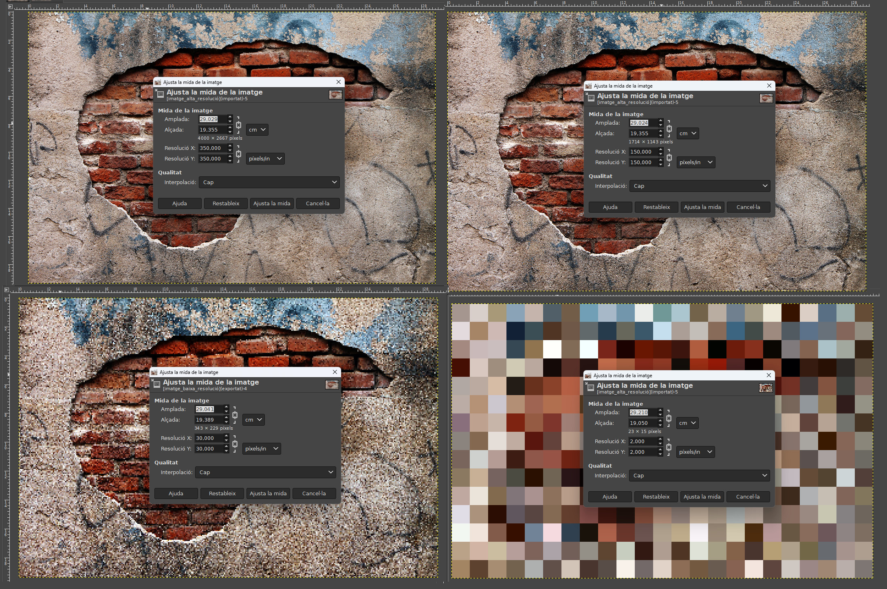
La mida de la imatge depèn de les seves dimensions (amplada i alçada), mides en píxels o altres unitats: punts, picades, mil·límetres, etc. Perquè entenguis millor aquest aspecte, has de diferenciar els conceptes que estem tractant: mida de la imatge, resolució de la imatge i mida de l'arxiu.
La resolució de la imatge l'expressem en píxels per polzada. A major resolució més píxels caben en una polzada i menor serà la mida dels píxels.
** La mida de l'arxiu de la imatge** considerada com a unitat d'informació digitalitzada, s'expressa en bits. Com més gran sigui la resolució, més gran serà la mida de l'arxiu.
Els valors més usuals que trobaràs són:
- Més de 300 ppp per a qualitat fotogràfica.
- 150 ppp per a qualitat d'impressora.
- 96 ppp per a qualitat de pantalla i web.
També és molt útil que sàpigues que una polzada equival a 2,54 cm.
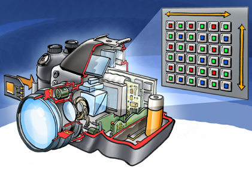
La resolució d'una càmera fotogràfica digital està limitada pel sensor de la càmera (generalment un CCD o un Sensor CMOS) que respon als senyals de llum, substituint el treball de la pel·lícula en fotografia tradicional. El sensor es compon de milions de "cubs" que es carreguen en resposta a la llum. Generalment, aquestes galledes responen solament a una gamma limitada de longituds d'ona lleugeres, a causa d'un filtre del color sobre cadascun. Cada un d'aquests cubs es diu un píxel, i s'utilitza un algorisme de mosaïcisme i interpolació per unir la imatge de cada gamma de longitud d'ona per píxel en una imatge del RGB on estan les tres imatges per píxel per representar un color complet.
Els dispositius CCD transporten la càrrega a través del xip fins a un convertidor analògic-digital. Aquest converteix el valor de cadascun dels píxels en un valor digital mesurant la càrrega que li arriba. Depenent del nombre de bits del convertidor obtindrem una imatge amb més o menys gamma de color. Per exemple, si s'utilitzés un sol bit, tindríem valors de 0 i 1, i només podríem representar presència o absència de llum, el que suposaria una imatge en blanc i negre pur.
D'altra banda, els aparells CMOS contenen diversos transistors en cada píxel. El procés de conversió digital es produeix a la mateixa estructura del sensor, de manera que no es necessita un convertidor afegit. El seu procés de fabricació és més senzill, i fa que les càmeres que utilitzen aquesta tecnologia resultin més barates.
La quantitat de píxels resultant en la imatge determina la seva mida. Per exemple una imatge de 640 píxels d'ample per 480 píxels d'alt tindrà 307,200 píxels, o aproximadament 307 kilopíxels, una imatge de 3872 píxels d'alt per 2592 píxels d'amplada tindrà 10.036.224 píxels, o aproximadament 10 megapíxels.
Segons l'experiència fotogràfica dels professionals en aquest camp afirmen que una fotografia química realitzada per una càmera compacta donaria com a resultat una fotografia de 30 megapíxels.
Autoavaluació
Test d'autoavaluació
Quina de les següents unitats de mesura utilitzaries per mesurar la resolució d'una imatge?
1.4. Tipus d'imatges digitals.¶
Quan accedeixes a un directori del teu ordinador en el qual tens fotografies emmagatzemades, veus que les imatges tenen diferents extensions. Aquestes extensions indiquen el format de la imatge. El format és la codificació amb què s'emmagatzema la imatge.
Depenent d'aquest format la imatge ocuparà més o menys espai, o es veurà amb major o menor qualitat.
Els formats més utilitzats per a imatges de mapes de bits són els següents:
- BitMap (*.bmp): És un format de gran qualitat, la imatge s'emmagatzema sense pèrdua d'informació, però t'ocuparà excessiu espai en disc. La solució són els formats següents que sacrifiquen qualitat per disminuir l'espai que ocupen en disc.
- Graphic Interchange Format (.gif): Només admet 8 bits (256 colors). Recomanat per a imatges planes, com poden ser logotips. Aquest format no és aconsellable que l'utilitzis per a fotografies. La seva evolució van ser els GIF animats utilitzats en els baners (anuncis publicitaris a internet).
- Joint Photograph Experts Group (.jpg): Usa 24bits (16M colors). Està recomanat per a fotografies, et permetrà comprimir les imatges però tinc en compte que produeix pèrdues de qualitat, a més, distorsiona la imatge en fotografies planes.
- Portable Network Graphics (.png): Creat especialment per utilitzar-se a la Web. És vàlid tant per a imatges planes com fotografies.Permet degradats i transparències a causa del seu alt grau de compressió sense pèrdua.
Reflexiona
T'has aturat a pensar alguna vegada si igual que el programari és diferent per a les diferents plataformes, també ho puguin ser els formats d'imatges? Coneixes els formats que s'utilitzarien en un ordinador MAC?
Els formats més utilitzats per a les imatges vectorials són els següents:
- Scalable Vector Graphics (.svg): S'utilitza per a vectors gràfics escalables, és un format molt recent però que pot ser usat fàcilment a Gimp.
- Windows Metafilea (.wmf): És el format que millor s'adapta als diferents programes de dibuix.
+ informació
Els formats gràfics comentats anteriorment són els més utilitzats, però n'hi ha molt més. Pots investigar sobre els diferents formats d'arxius de gràfics.
1.5.Transferència d'imatges a l'ordinador.¶
La major part de les càmeres digitals es poden connectar directament a l'ordinador per transferir la seva informació. Antigament les càmeres havien de connectar-se a través d'un port sèrie. L'USB és el mètode més utilitzat encara que algunes càmeres utilitzen un port FireWire o Bluetooth. La major part de les càmeres són reconegudes com una clau de memòria USB. Alguns models, per exemple la Kodak EasyShare One pot connectar-se a l'ordinador per xarxa sense fil pel protocol 802.11 (Wi-Fi).
Una opció possible és l'ús d'un lector de targetes que pugui ser capaç de llegir diversos tipus de mitjans d'emmagatzematge, així com efectuar la transferència de dades a l'ordinador a alta velocitat. L'ús d'un lector de targetes també evita que la bateria de la càmera fotogràfica es descarregui durant el procés de la transferència directa, ja que el dispositiu pren energia del port USB.
Un lector de targetes extern permet un adequat accés directe a les imatges en una col·lecció de mitjans d'emmagatzematge. Però si només funciona amb una targeta d'emmagatzematge, pot ser incòmode el desplaçament cap endavant i cap enrere entre la càmera fotogràfica i el lector. Moltes càmeres fotogràfiques modernes ofereixen l'estàndard de PictBridge, que permet l'enviament de dades directament a les impressores sense la necessitat d'un ordinador.
2. L'entorn de treball GIMP.¶
GIMP té moltes capacitats. Es pot fer servir com un senzill programa de pintura, un programa de retoc fotogràfic professional, un sistema en línia de procés per lots, un generador d'imatges per a producció en massa, un conversor de formats d'imatges, etc.
GIMP és ampliable i extensible. Està dissenyat per ampliar-se amb complements i extensions. La interfície avançada de guionat (scripting) permet automatitzar des de les tasques més simples fins als procediments més complexos de manipulació d'imatges.
Un dels punts forts de GIMP és la seva lliure disponibilitat des de diverses fonts per a molts sistemes operatius. Gairebé totes les distribucions de GNU/Linux inclouen el GIMP com una aplicació estàndard. GIMP també està disponible per a altres sistemes operatius com Microsoft Windows. GIMP és una aplicació de Programari Lliure coberta per la Llicència Pública General (GPL). La GPL brinda als usuaris la llibertat d'accedir i modificar el codi font del qual es construeixen els programes.
2.1. Obrir i guardar imatges en diferents formats.¶
Quan vulguis obrir una imatge hauràs d'accedir al menú Arxiu i polsar en l'opció Obrir, t'apareixerà una finestra com la següent:
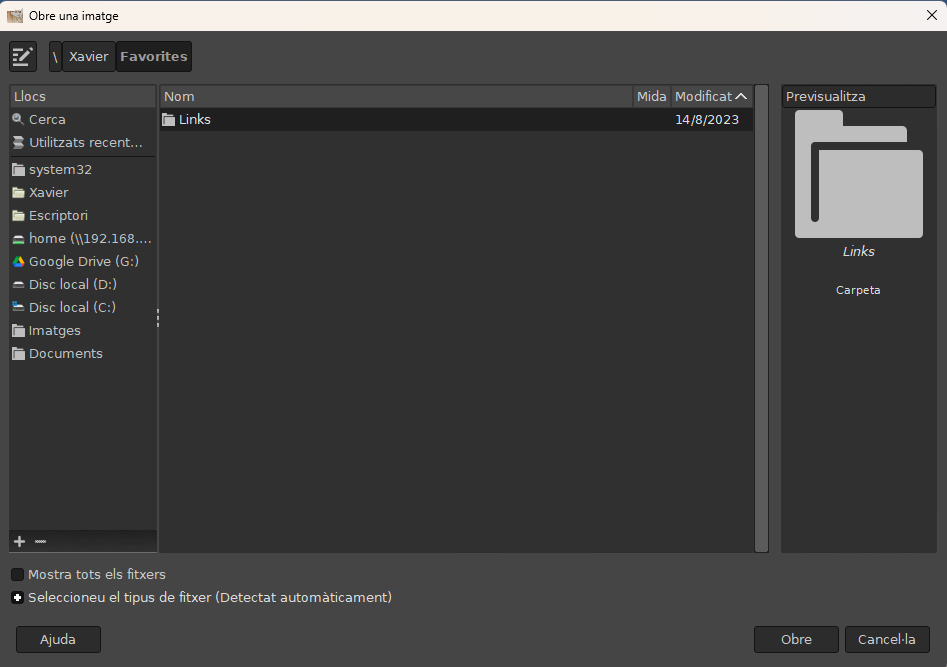
La part inferior, en cas de no estar desplegada, hauràs de pulsar sobre el botó (+), on posa tipus d'arxiu. És un filtre de tipus d'arxiu, perquè seleccionis el tipus d'arxiu que vulguis obrir, si et fixes, la primera opció és de detecció automàtic, per la qual cosa en un principi no t'hauràs de preocupar gaire d'aquesta opció. La part superior de la finestra és un navegador on podràs seleccionar l'arxiu a obrir.
La part superior de la finestra és un navegador on podràs seleccionar el directori on vols guardar la imatge. Quan necessitis guardar una imatge en un format determinat hauràs d'accedir a l'opció del menú Arxiu i polsar en l'opció Anomena i exporta, llavors t'apareixerà una finestra com la següent:
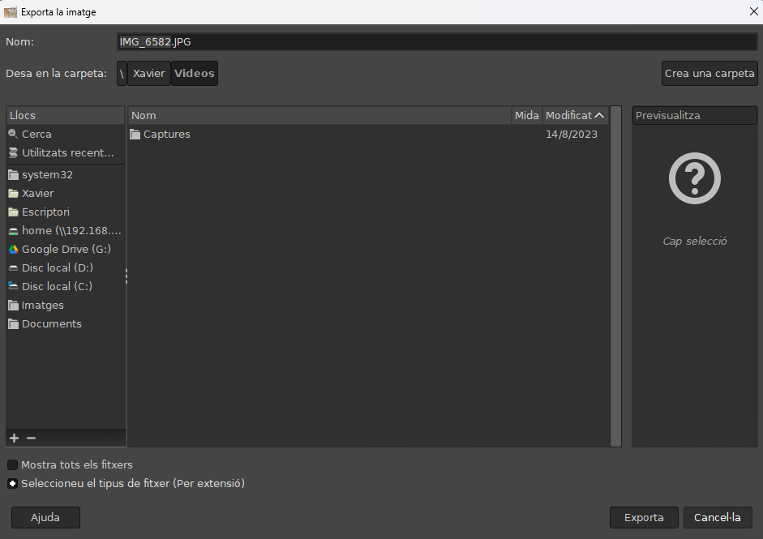
Basta que escriguis l'extensió del tipus de fitxer que vols utilitzar. Aleshores, en funció del tipus d'arxiu seleccionat, apareixerà una finestra diferent, on posaràs les dades referents a les característiques d'aquest tipus d'arxiu que vols que guardi l'aplicació.
+ informació
Amb l'excepció del tipus d'arxiu nadiu XCF, la gestió de formats es realitza mitjançant complements, també anomenats plug-ins. En el següent enllaç trobaràs les diferents opcions que proporciona GIMP per a cada tipus de format.
GIMP permet guardar fotos en qualsevol tipus d'extensió gràfica, però hi ha un format d'arxiu especial: XCF és el format nadiu del GIMP, i és útil perquè guarda tot el que hi ha en una imatge excepte la informació de "desfer". Els arxius XCF no poden ser llegits per la majoria d'altres programes que mostren imatges, així que un cop hagis acabat, probablement també voldràs guardar la imatge en un format usat més àmpliament, com JPEG, PNG, TIFF, etc.
Autoavaluació
Test d'autoavaluació
En quin format hauràs de guardar la imatge que acabes d'editar si la vols utilitzar a la nova web que estàs desenvolupant?
3. Eines bàsiques del gimp¶
En el gimp una de les finestres més importants és la caixa d'eines:
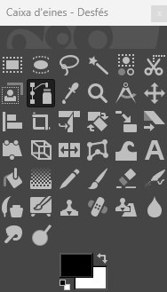
En general les eines (Menú Eines del GIMP) poden ser de cinc tipus:
- Eines de selecció, que defineixen la part de la imatge que es veurà afectada pels canvis que facis.
- Eines de pintura, que canviaran el color de certa part de la imatge.
- Eines de transformació, que variaran la geometria de la imatge.
- Eines de color, les que canviaran els colors de la imatge.
- Altres eines, que no són classificables en les categories anteriors.
Pots disposar al teu gust les eines de la caixa d'eines emprant el diàleg Finestres → Diàlegs empotrables → Eines. Hi ha dues raons perquè ho facis: primer, si rarament fas servir una eina, serà més fàcil trobar les que sí que fas servir treient la icona que no fas servir. Segon, si fas servir sovint les eines de color, és convenient tenir les seves icones a la caixa perquè estiguin més accessibles. La majoria de les eines estan disponibles a la caixa d'eines, però a algunes només podem accedir des dels menús. També podem accedir a les eines amb les seves tecles acceleradores corresponents.
Cada eina té el seu propi conjunt d'opcions. Els canvis que realitzis a les opcions es mantindran al llarg de la sessió, fins que les tornis a canviar. En seleccionar qualsevol eina pots observar que apareixen, a la part de baix de la finestra, les opcions pròpies d'aquesta eina concreta. D'aquesta manera, puguis modificar i ajustar els diferents paràmetres, com per exemple l'opacitat, els pinzells, l'escala, les vores, l'enfocament, l'ajust i la sensibilitat.
A la part inferior del diàleg d'opcions d'eines hi ha quatre botons. Amb ells podràs guardar les opcions que has modificat, recuperar opcions que guardes en un altre moment, esborrar les opcions que hagis guardat anteriorment i també restaurar totes les opcions als valors predeterminats inicials.
Les opcions d'eina apareixen sota la caixa d'eines en la configuració per omissió. Si la perds per algun motiu, pots restablir-la creant un nou diàleg d'opcions d'eina, escollint Finestra → Diàlegs empotrables → Opcions d'eina, i després encastant-lo sota la caixa d'eines.
3.1. Les seleccions¶
Les eines de selecció et serviran per aïllar una part de la imatge, de manera que puguis modificar-la, sense alterar-ne la resta.
Podràs fer qualsevol operació sobre la part de la imatge que has aïllat, com rotar-la, tallar-la, esborrar-la, etc. i tot això ho faràs sense afectar el conjunt de la imatge, sinó només aquesta zona seleccionada.
- Selecció rectangular (Rectangle). Si vols que la selecció sigui quadrada, alhora que arrossegues el ratolí has de mantenir polsada la tecla Shift (Majúscules).
- Selecció el·líptica (Elipse). Si vols que la selecció sigui circular, alhora que arrossegues el ratolí has de mantenir polsada la tecla Shift (Majúscules).
- Selecció lliure (Llaç). Realitzaràs les seleccions amb el ratolí a mà alçada.
- Selecció difusa (Vareta màgica). Selecciones regions contínues amb els píxels del mateix color.
- Selecció per color (Dit selector). Selecciones totes les zones de la imatge amb el mateix color, encara que no siguin contínues.
- Selecció per punts (Tisores intel·ligents). Amb les tisores ires creant punts a cada clic de ratolí i les línies entre ells s'aniran ajustant a les línies de color de la imatge. Has de fer coincidir l'últim punt amb el primer per tancar la selecció.
- Selecció per corbes (corba Bèzier). Si selecciones per corbes Bèzier els punts de control van creant una ruta que després podràs manipular per fer-la coincidir amb la imatge. Un cop hagis acabat la ruta, per crear la selecció hauràs de fer clic al botó situat a les propietats de l'eina amb el text "crear una selecció des de la ruta".
Cada vegada que selecciones una eina del quadre d'eines es modifica l'aspecte de la part inferior del quadre, on es troben les opcions de l'eina que en aquests moments tens entre mans.
Cuando hagas una selección, aparecerán unas hormigas en tus imágenes que delimitan la parte seleccionada. Sin embargo, te será útil saber que existe un Editor de Selección, al que puedes acceder desde el menú Ventanas → Diálogos empotrables → Editor de selección.
Quan facis una selecció, apareixeran unes "formigues" en les teves imatges que delimiten la part seleccionada. Tanmateix, et serà útil saber que existeix un Editor de Selecció, al qual pots accedir des del menú Finestres → Diàlegs empotrables → Editor de selecció.
En aquest Editor de Selecció tindràs dos colors, el blanc, per a la part seleccionada, i el negre, per a la part no seleccionada.
+ informació
Pots seleccionar zones de la imatge d'una altra manera, mitjançant la màscara ràpida. Quan activis la màscara ràpida veuràs que el seleccionat queda de forma normal, mentre que la resta tindrà una capa vermella a sobre. A continuació, podràs ampliar els teus coneixements sobre la utilització de la màscara ràpida a GIMP.
3.2. Escalar la imatge¶
En algun moment et trobaràs amb la necessitat d'engrandir o empetitir una imatge, a aquesta acció se l'anomena escalat.
L'escalat actua sobre la mida física de la imatge, de manera que aquesta passarà a contenir més píxels en cas d'engrandir la imatge i menys píxels, en cas d'empènyer-la.
Podràs escalar una imatge, o escalar únicament una capa, en aquest últim cas, hauràs d'operar sobre l'opció escalar capa.
Hauràs de tenir en compte que quan escales una imatge canviarà el nombre de píxels, en definitiva, canviarà la quantitat d'informació que conté la imatge i això afectarà la mida física de l'arxiu.
El procés que s'utilitzi per a aquesta sostracció o addició de píxels determinarà la qualitat del resultat. A aquest procés se l'anomena interpolació. Es tracta d'un procés matemàtic però que en aquest cas s'aplica al tractament digital d'imatges. Tenim diversos mètodes disponibles per a la interpolació del color dels píxels en una imatge escalada: Quan vulguis escalar la imatge, amb qualsevol programa de retoc fotogràfic, el que ocorrerà és que es treuen alguns píxels o se n'afegiran alguns de nous.
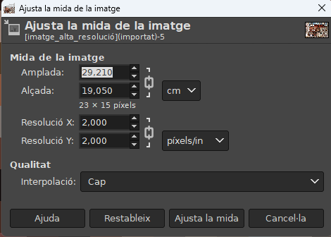
- Cap: No s'utilitza interpolació. Si vols engrandir la imatge, els píxels ampliaran la seva mida i si la vols reduir, alguns píxels s'eliminessin. Aquest mètode et donarà una baixa qualitat però és molt ràpid.
- Lineal: Relativament ràpid, amb resultats discretament bons.
- Cúbica: Tindràs millors resultats però també serà més lent.
Quan vulguis canviar la mida de la impressió, però sense escalar la imatge, hauràs de fer servir el quadre de diàleg que trobaràs a Imatge →Tamaño de la impressió.
La mida de la impressió depèn a més de la resolució de la imatge, ja que determina quants píxels tindrem per polzada en el paper en el qual vam imprimir.
Autoavaluació
Test d'autoavaluació
Si volguéssim engrandir una imatge mitjançant l'escalat d'imatge digital, quin mètode d'interpolació aplicaries per obtenir uns resultats mitjanament bons però amb un procés ràpid?
3.3. Modificación del color.¶
Quan creïs una imatge a GIMP, la podràs crear en base als següents modes de color:
- RGB: Aquest mode de color treballa amb els colors vermell, blau i verd, i a partir d'aquí barreja aquests colors per obtenir-ne uns de complementaris.
- Escala de grisos: Amb aquesta manera de color aconseguiràs una gamma de grisos, la qual, utilitza 8 bits de grisos.
- Color indexat: Amb aquesta manera de color crearàs una escala d'un o diversos colors.
- Per treballar amb el color a GIMP, et trobaràs amb paletes com les dels pintors.
Existeixen diversos tipus però totes tenen elements comuns i zones específiques de cadascuna. L'específica de cada manera és la que se situa en el quadrat de color, just sota les pestanyes d'accés al mode d'elecció de color. Els comuns són els següents:
- Pestanyes per accedir als altres tipus de paleta. Dalt a l'esquerra. (GIMP, impressió, pinzell, triangle, i paleta activa en aquest ordre).
- Selecció de color per tonalitat, saturació i brillantor (HSV).
- Selecció de color per la quantitat de cada color (RGB).
- Selecció de color pel valor hexadecimal.
La paleta Gimp: Accediràs a aquesta paleta per defecte, quan facis clic sobre l'opció Color de la caixa d'eines. Les diferents paletes que tenim a GIMP són les següents:
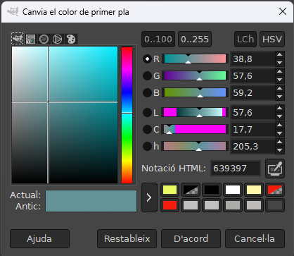
La paleta d'impressió: A aquesta paleta (també anomenada CMYK) accediràs fent clic al botó que té una impressora a la paleta GIMP. L'única diferència entre aquesta paleta i l'anterior és que a la part esquerra, en comptes de sortir l'opció de saturació de color, apareixen uns lliscants que et permetran variar la quantitat que vols donar-li a cada color. Paleta triangle: Aquesta paleta et mostrarà el model HSV d'elecció de color. Hi accediràs fent clic a l'arrel del triangle circumscrit en una circumferència, en lloc de l'opció de saturació del color. Apareixerà un triangle circumscrit en una circumferència. En la circumferència triaràs el color i en el triangle la saturació i la brillantor. Paleta aquarel·la: Accediràs fent clic a la icona del pinzell, aquesta paleta et permetrà accedir a una gran varietat de colors barrejats entre si. Paleta activa: Accediràs fent clic al botó amb un dit sobre una paleta de colors, amb aquesta paleta podràs triar entre 256 colors diferents, però a la predeterminada només podràs accedir a 23.
+ informació
El canal alfa és un valor amb el qual podràs mesurar el grau de transparència de la imatge. El valor oscil·la entre 0 i 255, és a dir, entre totalment transparent i totalment visible.
3.4.Ajustar la brillantor i el contrast.¶
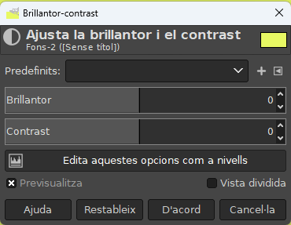
En més d'una ocasió necessitaràs ajustar la brillantor i/o el contrast d'una de les teves imatges digitals. Aquest filtre et permetrà corregir irregularitats en imatges clares o fosques, així com, realçar-los colors de les mateixes mitjançant el contrast.
Amb la brillantor, podràs regular la quantitat de llum de la imatge, si la fotografia ha quedat massa clara o massa fosca, podràs millorar la qualitat amb la modificació d'aquest paràmetre.
Amb el contrast, podràs regular la diferència de tons de color entre les diferents parts de la imatge, si veus que la fotografia que has tret amb la teva càmera digital no distingeix correctament els colors, podràs millorar la qualitat de la teva imatge, mitjançant la variació d'aquest paràmetre.
Podràs trobar aquest filtre a GIMP accedint-hi des del menú Colors → Brillo i contrast.
- Lliscant brillantor: Podràs seleccionar per a la brillantor un valor negatiu (més fosc) o positiu (més clar), variant la brillantor de les tonalitats.
- Lliscant contrast: podràs seleccionar per al contrast un valor negatiu (rebaixa) o positiu (incrementa).
- Vista prèvia: aquesta imatge presenta l'actualització dinàmica de l'original. Si la casella està marcada, els canvis es veuen immediatament.
Un accés ràpid per a la brillantor i el contrast: si fas clic a la imatge, i arrossegues el ratolí amb el botó esquerre polsat verticalment modifiques la brillantor, si fas el mateix horitzontalment modifiques el contrast. Hi ha altres dues eines en el menú Colors que són Nivells... i Corbes... que permeten fer el mateix tipus d'ajustos, i podràs tractar els colors brillants i els foscos, de manera independent.
Autoavaluació
Test d'autoavaluació
Quina de les següents afirmacions és correcta?
3.5.- Balance de color.¶
Aquest és el filtre perfecte per corregir tints de color tant a la llum, com als tons mitjans i les ombres de manera independent entre si, i entre cadascun dels diferents canals de color. Això permet augmentar i disminuir la presència de cada color en la imatge. T'haurà ocorregut alguna vegada que en descarregar una fotografia presa amb la teva càmera digital, per alguna raó, es veu com si estigués tintada per algun dels colors primaris RGB (recorda que en imatge digital canviem el groc pel verd), això té solució mitjançant el filtre de balanç de color.
Podràs modificar aquesta imatge amb l'opció de GIMP que trobaràs a Colors → Balanç de color.
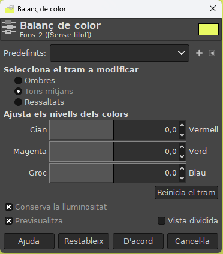
Les opcions que trobaràs en aquest quadre de diàleg són les següents:
- Seleccioni el rang a modificar: Seleccionant una de les opcions restringiràs el rang de colors que seran modificats amb els lliscadors i amb les caselles d'ombres, tons mitjans i punts de llum.
- ** Ajustar els nivells de color**:Els lliscats i les caselles et permetran seleccionar el valor del color en el rang seleccionat.
- Conservar la lluminositat: con esta opción podrás conservar el brillo de la capa activa o selección.
- Reiniciar el rang: Amb aquest botó reiniciaràs a zero els nivells de color en el rang seleccionat.
- Vista prèvia: Aquesta imatge presenta l'actualització dinàmica de l'original. Si la casella està marcada, els canvis es veuen immediatament.
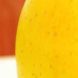 
En les imatges just a dalt podràs comprovar el canvi realitzat en la fotografia en modificar els valors de color. La imatge de l'illa de la part de dalt és l'original, sobre la qual vas a realitzar les modificacions del balanç de color. La imatge de l' illa de la part inferior, és sobre la qual hauràs realitzat les modificacions. En aquesta última, hauràs seleccionat la part de la poma i sobre aquesta selecció hauràs augmentat la influència del verd i disminuïtl a influència del vermell i el blau. Podrà ocórrer també que necessitis en algun moment una imatge determinada, però només en trobis alguna de semblant. Fixeu-te a la teva poma, és una illa de color groc, però tu necessites una poma de color verd. Per canviar-la, pots utilitzar l'eina de balanç de color per convertir aquesta mateixa imatge de la poma groga, en una poma verda.
Reflexiona
Moltes vegades les fotografies que obtens amb la teva càmera digital, tendeixen a temptar-se per la presència de males il·luminacions en les estances en què les fotografies estan realitzades. Podràs arreglar aquests desperfectes amb el "Balanç de color".